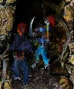

prev |
next |
home
Chapter 4: Third Element
[Editor's Note: The following first post for Dijani's
character is moved from its chronological-posting position to here.]
2812 - dijani_k - Thu Aug 30, 2001 1:43pm
THREAD 3: Dijani
Dijani moved
slowly in the shadows. This was indeed where the liason
told her to be, but something felt afoot in the air,
something that was menacing. She wondered what this job for
the goddess would be, and who it involved.
3015 - Shrsholn - Fri Sep 14, 2001 10:35am
THREAD 3: Dijani
Dijani, reflecting on
how she innocently undertook this perilous mission,
now finds herself in a nameless hamlet nestled in
coastal foothills, some week's journey overland from
Khole.A magickal storm has been conjured here, and the
thunderous hammerblows have begun to deafen Dijani now after
two or three days.Also, the rain and wind is
strong but intermittent, swirling about, as if the
elements were at war with each other.The last few
days you have spent in difficulty spying out the
hamlet. You have noted several thiings amiss, namely a
marked lack of human activity -- even within shelters;
no visible livestock of any sort; and the
unmistakable signs of gremlins -- lots and lots of
gremlins.As she is stooped down for cover, observing a
nervous band of hamleters rush out quickly to the only
well, while others guard the home with pitcforks and
staves. Of the three who ran to the well, two are
similarly armed, perhaps with a knife affixed to the end of
a short staff as a makeshift
spear.Harriedly, the one lowering the bucket tries to reclaim it's
precious contents, but upon bringing the bucket to the lip
of the well, three scaly, cat-like creature --
gremlins -- leap, one each, upon a man.As the
dread Lasagna Cat of Khazan is known to be able to
devour an entire family serving of the aforementioned
dinner, so too, these fearsome felinoids scrabble and
claw these poor, hapless folk.Outraged, Dijani
attempts to maintain her composure and her cover, all the
while crying out within to come to their aid...no good,
she can't hold back.Practically flying there,
Dijani's nickle-plated shortsword glints in a flash of
lightning from the storm pummling the hamlet.With one
stroke, a gremlin is launched from his victim to the
age-old cobblestones, and does not stir.With another,
the bucketeer is saved from his clawed attacker, and
this one too shall not rise.Ah, but the
third...[2nd Level SPD SR, please]
3026 - dijani_k - Fri Sep 14, 2001 9:44pm
THREAD 3: Dijani
Rolled 6+2=8+12=20 which is less than 25 -- BOMP! She fails.
3027 - Shrsholn - Sat Sep 15, 2001 0:30am
THREAD 3: Dijani
[+32APs]
Not quite fast enough, Dijani
attempts to block the furry fury which launches itself at
her.The critter hissing and growling, claws at her in
spastic savagery.The the spear-armed men
high-tail it out of the open back toward the shelter of the
house. The bucket man looks around desperately, then
picking up a fallen short-spear, shouts, "Hole still,
A'll gittem!"[>What do you do?<][a).
Trust the hamleter to skewer the rapidly dodging
gremlin.
[b). Try a round of melee at 1/2 your total.
[c).
Attempt to use a Cantrip.
3030 - dijani_k - Sat Sep 15, 2001 10:53pm
THREAD 3: Dijani
Dijani is not one to sit back and watch things
happen. She has to maintain an active role; sitting back
and watching in combat is not an option. She just
isn't built that way.Realizing that there is no
time for an effective strike, she attempts to buy some
time by casting "distract" on the gremlin, and turn it
away from herself, but at the same time, not toward
the hamleter.
3032 - mistwalker_ - Sat Sep 15, 2001 11:51pm
THREAD 2: Elise
Elise nods. "I am ready when everyone else is.
But what are you planning to do about the mist? I can not what has no body
to kill."
3039 - Shrsholn - Mon Sep 17, 2001 1:38am
THREAD 3: Dijani
Realizing that there is no time for an
effective strike, she attempts to buy some time by casting
"distract" on the gremlin, and turn it away from herself,
but at the same time, not toward the
hamleter.
Like a cat ready to pounce whose tail is touched, the
creature mis-launches itself over you, and between the
house and the two of you.[Temp. -01 ESS; +02 APs; What's next?]
3040 - Shrsholn - Mon Sep 17, 2001 1:56am
THREAD 2: Elise
"I'll collapse the tunnel after us, and we'll
procede from there." Silkervish says
bluntly.Escemine and Silthis, and the Orc look as if they have all
come to the conclusion that this was probably their
worst job they'd ever taken -- and quite possibly end
up being their last.
They are
silent."This is utterly amazing and yet terribly morbid.",
Kellis says, shuffling in mental shock at the sheer
carnage in the tunnel; the armed and armored
ogre-zombie..."If I should live to tell the tale -- they'd never
believe me...", he continues, looking
astonished.There is silence for a few moments as everyone prepares
to embark on the next phase of this
tunnel-trek.Kellis picks up the discarded stiletto, and looks as if
he'd received a slight jolt, but then taps the flat of
the thin plade against his left palm, and stands up,
tossing it and catching it with extrordinary talent.
"Well, now that I'm alive and all...I suppose we should
head out."
3061 - dijani_k - Thu Sep 20, 2001 3:27pm
THREAD 3: Dijani
Dijani whirls around, facing the gremlin head on,
a confident smile on her face. Reaching out her
left hand (with her right gripping her flashing sword)
she holds it palm-up, stretches her fingers out, then
coils them back toward her quickly three times. Seems
like she might have seen that in a movie
once...[[OOC: When the gremlin attacks again, she will be
ready, and will strike quickly.]]
3062 - Shrsholn - Thu Sep 20, 2001 3:40pm
THREAD 3: Dijani
[Techno music begins...]With a flash of
blue-white lightning, the world seems to slow to a
crawl...It seems a near eternity between the stroke and the
thunder.The drops of rain, tumbling through the lazy air,
stream down slowly, and Dijani hears them crashing
individually on the old stones near the well.The
gremlin slowly rattles its head, the drops shaking lazily
in all directions, as the little bugger begins his
languid and syrupy trot toward Dijani, claws unsheathed
and with a wild look in its eyes.[The gremlin
has rolled a Round total of 11][>"You're
faster than this! Don't try and hit me...Hit Me!"<]
3074 - dijani_k - Sat Sep 22, 2001 3:29pm
THREAD 3: Dijani
Dijani plants her feet for a solid blow and
swings her short sword. Wind whistling around her blade,
Dijani spies the glint of her sword's steel reflected in
the gremlin's wide-open, bloodthirsty irises. (As
long as we're in slowmo.)[Dijani rolls: 13
[3d6 (4+4+5) for shortsword] + 20 (Melee Mods) + 12
(Combat Bonus) = 45 Round Total]
3075 - Shrsholn - Sat Sep 22, 2001 7:27pm
THREAD 3: Dijani
In twain, the gremlin expires...his port side
near the door of the house, and the starboard side of
the gremlin went thither knows where.
[>end
techno-music<]The immediate crisis over, the roar of the rain, and
the clockwork thunder return to dominate Dijani's
senses.
THREAD 2: Elise
-=[ Scene change ]=-Elise and the others have
sealed off the tunnel leading to the hot spring and
river. There are two tunnels, one leading directly into
town; the other out toward the coast.The
townward tunnel looks to be of old, but sturdy, possibly
even dwarven-assisted, construction. It appears to be
used frequently, and Elise's tracking skills tell her
that it surely leads to another spot worth
investigating.However, the skelletons have reported to Lady Silkervish
that there is definite activity coming from the
coastward tunnel -- large numbers (more than 20) of humans
and humanoids -- possibly pirates.[So let's
get this ball rolling again, shall we?]
3076 - Shrsholn - Sat Sep 22, 2001 7:32pm
THREAD 3: Dijani
[>end techno-music<]
The immediate
crisis over, the roar of the rain, and the clockwork
thunder return to dominate Dijani's
senses.
"Please, come in, quickly!"
the bucketeer shouts over the din, running toward the
house as hail stones begin to fall and the wind from
the coast grews chill and more forceful.The
house is a large hovel, with addition hovelettes for
the children and their families.It has a thatch
roof, and plaster covered adobe
walls."C'mon..." the hamlet dweller urges.
3078 - mistwalker_ - Sun Sep 23, 2001 4:54pm
THREAD 2: Elise
"Possibly pirates." Elise says as she heads
towards the coastal tunnel, swords drawn and ready.
"Possibly bandits. Let's find out, shall we?" She
creeps down the tunnel moving as quietly as she can,
alert for any signs of ambush or traps and testing the
air every few seconds for her quarry's scent.
3079 - Shrsholn - Sun Sep 23, 2001 5:43pm
THREAD 2: Elise
[>* Elise *<]With a rejuvinated
Kellis, Elise creeps down the coastward tunnel, and
carefully pops her head around a bend to see three or four
surly looking sea dogs (pirates) armed with cutlasses,
longswords, and one even weilds two
shortswords.[Lvl.2 LCK SR please]Silthis is flying nearby,
ready to zip back and sound the quiet alarm.
Kellis
is armed, and looks to Elise for orders.
Escemine
and the others are back a few yards, the skelletons
ready to enter the fray...
3087 - mistwalker_ - Thu Sep 27, 2001 6:28am
THREAD 2: Elise
"Take one alive." She says in a low hiss, wishing she had room to swing her
bolas. "And stay here. Make them come to us."(Missed the save by
9.)
3089 - Shrsholn - Thu Sep 27, 2001 7:37pm
THREAD 2: Elise
..Make them come to us."
As Elise
utters those last sounds, the lot of scoundrels rush
forth in abandon.Kellis, obligingly runs back
toward the group, and is hotly pursued by two of the
pack.The other two seem intent on taking you
down.
>[Fight them as a unit of MR 72 (08d+36)= 62, with one
'6' rolled for an automatic hit.]
>[Kellis is facing a unit MR of 54 (06d+27)= 46, with one
'6' rolled for an automatic hit.]
[Kellis counters with all of 14, but with three '6'-s --
so each dog tasted his steel at least! However,
Kellis is vicously dropped by the cuthroats...and
Escimine and Silthis are already on the scene, with Lady
Silkervish, and her kinswoman in the next rank now loosing
spells.
3090 - dijani_k - Thu Sep 27, 2001 8:17pm
THREAD 3: Dijani
Realizing that with the unceasing wind and rain
her abilities to track and observe are hindered,
Dijani decides that canvassing the local population is a
good alternative. "I'm coming!" She says, and
heads for the house.
3091 - Shrsholn - Thu Sep 27, 2001 11:35pm
THREAD 3: Dijani
-=[Dijani]=-The hovel-hub is filled with
simple, grungy folk, but they welcome you to what little
they have -- namely a hot bowl of carrot and parsley
soup, and a place to dry off and get warm.The
three that you rescued are treated as best as the
womenfolk know how with the few supplies they can spare,
but one man is badly hurt, and isn't likely to last
long in this environment without serious curatives or
magicks.The jumbled mass of data they offer you consists
mainly of gremlin tales, wizard tales, and strange
superstitions about an undergound ocean.[what next?]
3092 - dijani_k - Fri Sep 28, 2001 11:41am
THREAD 3: Dijani
Savoring every drop of the soup, Dijani could
feel its warmth reaching the cold inner reaches of her
stomach and spreading throughout her body from there.
Warm food on a rainy, cold day was one of life's most
enjoyable and simple pleasures.The tales of an
underground ocean intrigued her. Could this be an ideal spot
for this bounty to hide? Could it be used as a base
of operations for an entire network? Perhaps the
people were frightened of the place for reasons that
were perpetuated by the cunning adversaries.
It seemed that the women in the group had done all
that they could, while Dijani had been eating, for
their fallen friend. She wondered if there was
somewhere nearby where a person of magicks or healing could
be found.But first she needed some answers.
Still, it looked as if the poor bloke mightn't last much
longer without help. "I'm not very familiar with this
area. Can you tell me more about this underground sea?
Has any of you actually seen it? And is there a
healer nearby for your friend there?"
3093 - Shrsholn - Fri Sep 28, 2001 1:07pm
THREAD 3: Dijani
-=[Dijani]=-
"I'm not very familiar
with this area. Can you tell me more about
this underground sea? Has any of you actually
seen it? And is there a healer nearby for your
friend there?"
"We are land-bound servants of
the wizard, Bojfe [sic.] Shul, and it is he who can save my
brother-in-law Awulf."The underground ocean is somewhere
only the foolish venture into. It is guarded by the
wizard's creatures which you saved us from.
"It is best
not to anger the wizard any more than he already is,
judging from the storm he has loosed upon us...", replies
Geun, the bucketeer.
3095 - Shrsholn - Sat Sep 29, 2001 2:41pm
THREAD 2: Elise
-=[Elise]=-A cursive and writhing gout of ebony flames
proceeds from Lady Silkervish, sweeping first from the two
who downed Kellis, then toward those engaged with
Elise.[She inflicts 61 on the first group, and 50 to the
group on Elise]Larshes'ke produces a potion
recovered from the chest, and pours it down Kellis's
throat.Escimine attacks the two on Kellis with her twin daggers
[31] after the flames have swept across, and she
easily dispatches the roasted pair.Silthis
shouts, "There's more comming!"
3098 - mistwalker_ - Sun Sep 30, 2001 5:00am
THREAD 2: Elise
Elise blinks at the sudden flash of light in
front of her, then lets fly with her swords. "Take one
alive!" She calls back to the others.4,4,3 +4
& 5,4,1 +4 =29 +adds 28 & warrior bonus 16 =75
hits. Armor stops 6,4,2,4 x2 =32 hits.
3103 - Shrsholn - Sun Sep 30, 2001 6:40pm
THREAD 2: Elise
-=[Elise]=-[Hot sea-dogs
anyone?]Between the black flames razing their bodies, or Elise's
twin blades of death, the first wave of pirates is
thoroughly dispatched.[take one hit past
armor]"There's more comming!", Silthis shouts
shrilly.Indeed, Elise sees four or five more barely peer round
the rocky tunnel passage some 10 yards ahead, then,
popping out is a black clad archer whose left fist is
encrusted with writhing and moaning rings. "Chum is what
you'll be if you don't go out there!", this man shouts
to the others as he dashes out; then, "Look boys,
we'll have fun with her first, then cook her as
steaks!"He lets fly with a flickering arrow.
[Elise is a
3rd Lvl SR target]{dice rolling...}The
phantom arrow which misses Elise is lit like swamp gas,
and smell at least as bad.The archer's rings
all hiss and boo, and he shouts at them, "Shuddup!".
They continue to gibe and gibber in a low tone...
3105 - mistwalker_ - Mon Oct 1, 2001 10:13am
THREAD 2: Elise
Elise pulls back behind the corner and motions
for the others to stay back. If that archer wants a
clear shot, he's going to have to get much, much
closer! "Anyone here want to zap an archer, this would be
a good time to step up." She keeps her swords
at the ready, intent on dismembering anything that
pokes it's head around the corner.
3106 - Shrsholn - Mon Oct 1, 2001 0:40pm
THREAD 2: Elise
-=[Elise]=-Having seen the devastation
wrought in such little time by the party, the other
pirates are reluctant to storm the tunnel.The
archer dashes back to his mates, and shouts something as
he disappears around the corner they rounded. They
follow...[Bwa!ha!ha!ha! <wringing hands evilly>]
3127 - mistwalker_ - Thu Oct 4, 2001 10:06am
THREAD 2: Elise
"They expect us to follow." Elise says, matter of
factly. "Into a trap or ambush, no doubt." She looks
back at the rest of the group, giving each of them a
quick appraisal before her eyes rest on Lady
Silkervish. "Are the skeletons expendable?"
3134 - Shrsholn - Fri Oct 5, 2001 0:48pm
THREAD 2: Elise
-=[Elise]=-"Yes, what do you have in
mind?", Lady Silkervish asks, looking
concerned.Kellis begins to moan and spasm as the potion Larshes'ke
administered begins to kick in.
He shoots up, reaching out
his hand toward Elise, then lowers his arm, and
half-closes his eyes, laying back down.Escimine asks
Larshes'ke, "Is that a typical response?", looking
doubtful.Larshes'ke is silent, then offers, quietly, "Perhaps the
other, orcish potion -- has...modified the intended
effect. In either case, he appears to be stabilzed..."
She continues to observe Kellis, who seems to barely
breathe, and seems to be a bit greyish in coloration
now.The orc, Silthis, and the skels busy themselves with
the task of checking the other directions, and making
sure no one ambushes the group.[A L2 SR on
(INT + your Trapping skill Rank), please][p.s.
Elise has earned an additional 230
experience...I've been negligent in handing it out. Sorry.]
3146 - mistwalker_ - Mon Oct 8, 2001 7:37pm
THREAD 2: Elise
Elise looks down at Kellis, slightly concerned
but not understanding why. "Bards should not play at
being warriors....." Turning her attention back to
Silkervish, "What I have in mind is sending them ahead to
flush out whatever ambush they have planned. It would
work better if they could be made to look
more....alive, but as long as they're attacked before us we get
an edge."
3149 - Shrsholn - Tue Oct 9, 2001 7:44pm

THREAD 2: Elise
-=[Elise]=-Within a few minutes, the
skels are dressed in what clothes can be salvaged and
spared.Perhaps in dim light they will seem to be entirely human,
however once a blow or two should land, the ruse will be
at an end.Hopefully that will be enough
time.* [3d roll; and an unnamed SR, please]
The
skels are sent on their way, and Larshes'ke and Lady
Silkervish are remotely coordinating them -- so they are out
for spell casting for at least one-half a melee Round
should something happen...[Look in the Photos
section]
[Editor's Note: Image from Photos section of group saved,
cropped and shown to the right. Click image for full size.
Caption: "Skels away! Into the gloom they went to deal death", by
Shrsholn]
3153 - mistwalker_ - Date: Fri Oct 12, 2001 8:21am
THREAD 2: Elise
Rolled a 14 on the 3D6. Saving roll is 8.
Thanks for the pic.
:)
3155 - Shrsholn - Fri Oct 12, 2001 4:03pm
THREAD 2: Elise
As the skels turn out of sight, Elise notices a
thrown dagger which either missed its target, or
deflected off the skel's clothed bones.Some
comotion seems to indicate that the scallywags are on the
run, and purple-black flashes of light from down their
end suggest that some of the battle is arcane in
origin."I think we should advance to the next curve." Lady
Silkervish offers. The others are ready, Kellis standing but
still looking like death warmed over.[+26 experience]
3158 - mistwalker_ - Sat Oct 13, 2001 9:18pm
THREAD 2: Elise
Elise nods. "Target the finger wagglers first if you can. Kellis, stay in the
back." She steps around the corner quickly, surveying the situation ahead as she moves.
3160 - Shrsholn - Tue Oct 16, 2001 11:09am
THREAD 2: Elise
Elise pops around the corner, and dimly sees the
two skels engaged in furious battle with the pirates.
The sea dogs are retreating to better positions
further down the tunnel they had taken.The
black-clad archer is avoiding combat as much as possible,
trying to climb up an outcropping to enter an elevated
tunnel, possibly leading to the surface.
3162 - dijani_k - Tue Oct 16, 2001 5:11pm
THREAD 3: Dijani
"Will you be taking Awulf to the wizard for aid?"
Dijani asked her companion. [[OOC: If he says
no, she'll ask why. If he says yes, she'll ask if he
needs help. Then...]]"I realize that the
underground ocean is taboo... but surely some youth among
your group has gotten a bit curious. Is there no one
who has been ambitious enough to seek answers about
this underground mystery?"
3164 - Shrsholn - Fri Oct 19, 2001 7:41pm
THREAD 3: Dijani
"Will you be taking Awulf to the wizard for aid?"
Dijani asked her companion.
The bucketeer
replies, "Yes, that is, I would, but for this fearsome
storm he's summoned up...would you take him there --
with me?"
[Dj_K>"yes"<] "I
realize that the underground ocean is taboo... but surely
some youth among your group has gotten a bit curious.
Is there no one who has been ambitious enough to
seek answers about this underground
mystery?"
"Yes, of course...but...I haven't been down there in
over four years. There are a few tunnels, and one
large, nasty..." suddenly he's cut off...Dijani
can hear scraping noises on the heavy wooden door, as
well as meowing-like laughter from all around the
hovel. What first sounded like thunder now a second
time, sounds like a single, heavy rap against the
door.A stroke of lightning crashes outside the shuttered
window, sending a bright violet flash throughout the
interior, just as a third ramming of the door occurs.
3166 - dijani_k - Sat Oct 20, 2001 4:43pm
THREAD 3: Dijani
"It looks as if the evil of night has come to
find us rather than waiting for us to travel to help
your friend." Dijani said, unsheathing her sword.
"Whoever made your wizard-lord angry seems to have done a
thorough job. Do you have a military leader, and weapons?"
3167 - Shrsholn - Sun Oct 21, 2001 0:01am
THREAD 3: Dijani
"It's them..." the householders say almost in
unison, then look to you, their frightened eyes giving
you the sorry answer -- you are their current
hope.The gremlins continue their assault against the
hovel, and it seems that soon, the door will give
way.[please give me a 2nd lvl. Luck SR]
3168 - mistwalker_ - Mon Oct 22, 2001 7:47am
THREAD 2: Elise
Elise rushes down the tunnel as they retreat. If
it looks like she'll be able to get to the archer
before he disappears she'll pull out her mancatcher and
try to snag him with it. If he's too far down but
there's room to swing her bola she'll try that instead.
3169 - Shrsholn - Mon Oct 22, 2001 10:38am
THREAD 2: Elise
-=[Elise]=-Grabbing for her mancatcher,
Elise sees the archer's torso slide into the elevated
tunnel he's squirming into, exposing only his
legs.The man is still 20 yards -- or so -- further in the
darkness.A Bola throw might do the trick, but it will be
tough.[3rd Lvl. DEX SR with Bola Ranks added to
DEX]But, before Elise can do any of that, she is faced
with two pirates on her left flank.[They are
worth a combined 8d ~ 32 HPT this Round, and can
effectively take 28 hits as a group]
3170 - dijani_k - Wed Oct 24, 2001 2:50pm
THREAD 3: Dijani
2nd lvl Luck SR: 8 (Makes it!)"Everyone
grab anything sharp--a pickaxe, a rake, a pitchfork, a
utensil--and cluster around the door. If they break it down,
we can't let them just rush in; we have to contain
them at the door!!" Dijani shouted, as she took
position.
3171 - Shrsholn - Wed Oct 24, 2001 3:24pm
THREAD 3: Dijani
-=[Dijani_K]=-
2nd lvl Luck SR: 8 (Makes
it!)
The door holds for now, allowing Dijani to rush to
the large benched dinner table, ready to reinforce
the door. The other occupants help, and the table is
positioned squarely to receive the next blow which comes as
soon as it is set in place. Dijani knows that the
door wouldn't have held without that timing, and that
there is a [Round or two: about 5 min.] left of the
baracade -- at most."There are entrances to the
underground in most of the cellars here. Ours has been
bricked-up since before I was born.", the young man blurts
out. "All our tools -- anything useful like that, is
down there." responds an old-timer, who had been
largely silent up to this point.
3172 - dijani_k - Thu Oct 25, 2001 4:00pm
THREAD 3: Dijani
"Well where the hell is it?" Dijani asked,
increasingly impatient, and beginning to think that these
people were in servitude to a lord only because they
didn't have the collective brainpower to mount a
resistance.
3173 - Shrsholn - Fri Oct 26, 2001 9:34am
THREAD 3: Dijani
-=[Dijani_k]=-[heh]Pulling back a
heavy trunk, reaveals a door in the floor of the hovel.
Lifting the door reveals a steep set of stairs down into
an oddly musty and yet briney
smell.Producing light from some handy source, the bucketeer hops
down from the last rung, and begins to wheel around,
illuminating the cellar of the structure.He moves a pace
or two, and begins to clear the shelves of masonry
jars and roots preserved in the dank
cold."I've got it. Here, here...", he says excitedly as he
begins to move the shelf exposing a shoddy brick job,
held fast with limestone mortar.The opening is
an archway, bricked from top to bottom. Its height
is about five feet.
3174 - dijani_k - Sun Oct 28, 2001 8:08am
THREAD 3: Dijani
Dijani quickly examines the mortar holding the
bricks together, and kicks the wall (not with full
force, just to test its strength) while asking, "Anyone
know of an easy way to get through this? Explosives
handy, battering ram you've hidden in your back pocket?"
Things didn't look good. Those gremlins would be here
any minute, and if they were trapped down here the
little varmints would probably just burn the hovel above
them and turn them into fireworks.
3175 - Shrsholn - Sun Oct 28, 2001 11:24am
THREAD 3: Dijani
-=[Dijani_K]=-The mortar begins to
crumble and give way with a moderate kick.
Geul, the
bucketeer, and the others begin rummaging through the burlap
sacks for the tools the old timer
mentioned.Dijani can hear the table slide after a forceful ram
buckles the door. There is litle time.Quickly
producing a hoe, and a spade, the men begin smashing the
mortar seams, and with a few kicks, a suitably large
exit is formed.As the bricks topple to the
cold tunnel beyond, the sound of splintered wood
raining down on the table above signals that the small
creatures must surely be through by now.Above the
din of the scrambling, meowing gremlins and the
crashing thunder, Dijani can faintly sense powerful
magicks being cast from the underground passageway, and
perhaps hears the sounds of human voices...[p.s.:
Awulf is carried in a sheet as a stretcher by two
others eager to escape certain death.][p.p.s.:
Dijani's magick abilities might come in handy...if the
spell book is available, look at Levels 01-04 -- hint,
hint]
3176 - mistwalker_ - Mon Oct 29, 2001 10:14am
THREAD 2: Elise
"Manticore spit!" Elise curses as she faces off against the 2,
swords at the ready. "Someone stop that archer!"
3177 - Shrsholn - Mon Oct 29, 2001 10:27am
THREAD 2: Elise
-=[Elise]=-[repost:>[They are worth a
combined 8d ~ 32 HPT this Round, and can effectively take
28 hits as a group]<][I need Elise's
damage total for the first Round of combat...If her
total is greater than 60 points, then Elise barely
notices their feeble strikes, and she can try for that
3rd Lvl. (DEX+Bola Rank) SR this same Round...]
3190 - mistwalker_ - Thu Nov 1, 2001 1:29pm
THREAD 2: Elise
sorry.1st sword did 3,4,5+4 =16.
2nd sword
did 6,5,6+4 =21.
Plus personal adds 28 and Warrior
bonus 16 =81.
Got a 9 on the DEX save, making it by
3 I believe.
Armor roll is 6,2,2,1 x2 =22 if
needed. Elise guts them with a snort of contempt, grabs
her bolas and sends them spinning at the archer!
3193 - Shrsholn - Thu Nov 1, 2001 9:01pm
THREAD 2: Elise
-=[Eise]=-Before the two have crumpled to
the ground, the bola finds its mark, tangling the
archer's legs together just as he was nearly out of sight
up the shaft.Curses fill the
tunnel.The others are sweeping the human debris from the
tunnel; the skels slashing and dropping the foes without
hesitation or mercy -- leaping over the fallen to engage the
next.The orc now clambors up the rockface to the same
small passageway the archer has begun to wriggle up.
Grabbing an ankle, the orc is shot by a swamp-fire arrow
which releases his grip. And reveals a frightful scowl
on the face of the orc.
"Gharruk Vak!" he cuses,
clutching his broiled arm.Escemine runs up him, and
dives into the shaft, both Sax in her hands. She
thrusts and slashes at the foeman's legs, and further
screams and cursing fill the tunnel.The hob'tess
is summarily ejected from the crevace having
apparently suffered a few minor wounds -- though bloody
still."Hrumpf!" she exclaims as she lands on her
tusch.Elise runs-through the last of the pirates still in the
tunnel justs as a ghostly arrow dips incredibly out of
the shaft, and looping once, strikes the orc squarely
in the chest.He clutches at the wound, then
falls to the ground, looking unsconscious at the
least.Fiften or twenty dead or dying pirates litter the
tunnel, and the short distance the handful of survivors
who were able to flee headed down curves sharply to
the right -- east, to the coast.Larshes'ke
begins to administer to the orc, and Kellis ambles up
the few yards, and slowly and carefully peers around
the corner."They're in full retreat. The tunnel
opens onto the beach where the've a dhingy waiting...",
he says somewhat listlissly.[+65 Exp.]
3197 - mistwalker_ - Sat Nov 3, 2001 7:10am
THREAD 2: Elise
Elise rushes up to the crevace, whipping her mancatcher out and thrusting it
in to snare the archer. (The prongs were coated with the spider venom
earlier. What do I need to snag him?)
3200 - Shrsholn - Sun Nov 4, 2001 1:54pm
THREAD 2: Elise
[* mistwalker *]
[While several posts ago
Elise coated her Mancatcher, the time for its
effectiveness has come and gone. "No poison retains
effectiveness after the 3rd consecutive turn (whether it has
reached its destination or not)" 1.52.5P -- 30 minutes
after application the poison is no longer
effective.]
Elise realizing the ineffectual application of the
poison, coupled with the tight confines of the -barely-
human-sized chimney makes the Mancatcher a useless weapon at
this stage.The black-clad archer has at least
gotten to the top of the chimney, but is clearly wounded
-- and most of that in the legs - and he's likely
still tangled in the bola - so he isn't likely to be
far off. If only a means to the upper levels could be
found..."Well, that was riotous." Lady Silkervish quips, looking
very drained.Larshes'ke too is sweating and
shivvering from the massive expenditure of arcane power
channeled through her lithe form.The orc is coming
'round.Kellis has made his way back toward
Elise.Escemine is busy gathering any useful and portable
trinkets from the fallen pirates, while Silthis is
flitting about the men, looking for ones still alive
enough to be questioned.The undead ogre, far too
large to fit the tunnel that the melee took place in,
continues to guard the point of entry for the party, back
at the intersection.* > Town tunnel -
n.east
* > Coastal tunnel [current location] -
east
* > Due north tunnelWhich tunnel seems
most profitable for Elise's mission?
3201 - Shrsholn - Wed Nov 7, 2001 9:20pm
Interlude: Reward for the Players who Post
-=[Shrsholn]=-The gaming group you have
tormented over a couple of months have finally given up
hope. They have seen your heavy-handed style, grim
narratives, and swum the bloody sea of your adventures 'til
they realized that there was little hope.The
staunchest of players, mistwalker, has finally walked-off
set, hoping to find greener pastures for his Minoelf
bountyhunter.You are alone in a dark and dangerous place, ill
equipped to face the challenge of gaming -- once again --
by yourself.*** What do you do? ***
3202 - Shrsholn - Wed Nov 7, 2001 9:31pm
Interlude: Reward for the Players who Post
Shrsholn lights a hand-rolled cigarette,
contemplates her sorry state, then drawing her swordbreaker,
walks past the zombie ogre still watching the
intersection, and heads down the tunnel toward the
hamlet.She's wary of gremlins, evil wizards, bandits, pirates,
innocent 'good' NPC-types who might confuse her with a
monster, and a party of recently escaped hamleters lead by
her former player's character: Dijani_K.She
figures only the gremlins would let her pass unmolested
[elsewhere a hob' snickers] due to her innate affinity with
both cats and malicious evil tendencies (or is that
one in the same?)[To remind the GM, Shrsholn
is a 13th level Trollop with advanced Sarcasm
abilities, so if there are any vaguely humanoid creatures
which might debate eating her rather than --um--
ravishing her, she gets to make a 1st level CHR SR to be
ravished instead.]
3203 - Shrsholn - Wed Nov 7, 2001 9:37pm
Interlude: Reward for the Players who Post
-=[Shrsholn]=-[I know all about Shrsholns
Trollop abilities, don't you worry your sweet little
iceicle of a heart none.]The tunnel leads onward
for several hundred yards, then comes to a
split.On the left hand side is a tunnel which has an
occupied sconce on the rough tunnel wall illuminating a
sign which reads (in Common) 'to a quick and painless
exit from this drivvel'.The right-hand tunnel
has a similar sign also illuminated by a torch. It
reads, 'to utter ruin, dismay, and general
mayhem.'*** Which tunnel do you take? ***
3204 - Shrsholn - Wed Nov 7, 2001 9:40pm
Interlude: Reward for the Players who Post
Too smart for these kinds of deterrents, Shrsholn
straightens her Trollop outfit, and lifting her head high,
procedes down the right hand tunnel after she rolls
another cigarette.p.s. She's still armed with her
swordbreaker...
3205 - Shrsholn - Wed Nov 7, 2001 9:46pm
Interlude: Reward for the Players who Post
-=[Shrsholn]=-[Rolling
dice...]Shrsholn is eventually greeted by an evil wizard named
Bjolfe or something like that. He takes her to his evil
wizard hideout, and wines and dines her.
[he fails
his 13th level IQ SR by 3...damn!]In the
morning, Shrsholn finds a roughly chewed-off forearm
(right) under her.Apparently the wizard came to
his senses, and escaped.Apart from any unseen
servants (tm), the wizard hideout appears to be
uninhabited.A small trail of blood on the sheets indicate the
initial direction of his escape.*** What do you
do? ***
3206 - throst54 - Wed Nov 7, 2001 10:02pm
Interlude: Reward for the Players who Post
[Throst] "Ha I knew they couldn't keep me down
for long. Well i'm going back to the Bluefrog Tavern
that's what i'm doing!" he shouted up to the voice that
shouted downand he begins his journey home.
--Throst, the guy still wondering what exact post the dwarf
died.
3207 - Shrsholn - Wed Nov 7, 2001 10:21pm
Interlude: Reward for the Players who Post
-=[Shrsholn]=-Did I mention the evil wizard was _very_ short?
3209 - mistwalker_ - Fri Nov 9, 2001 2:14am
Interlude: Reward for the Players who Post
OOC: Not at all. I've had trouble keeping up with
posts lately and am seriously considering dropping out
of a few games, but im having fun with Elise and
would like to continue if it's still an option.
3210 - dijani_k - Fri Nov 9, 2001 2:44pm
Interlude: Reward for the Players who Post
Sorry Shrs! I've been trying to find my spell list, to no avail. If
you'll e-mail me Dijani's spell list I'll post asap.dijani
3211 - Shrsholn - Sat Nov 10, 2001 2:10pm
Interlude: Reward for the Players who Post
Yes, of course, mistwalker.
Elise still exists, frozen in time
til you give the word.I was just getting desperate.
(Ask Shipy what happened last time I got desperate...)
[Wink-wink]
[Editor's Note: A reference to the side-adventure starring Shipy and Shrsholn,
of course.]
3212 - Shrsholn - Sat Nov 10, 2001 2:12pm
Interlude: Reward for the Players who Post
Righty-o, it[spell list] should arrive soon.-Shrsh'
3213 - mistwalker_ - Tue Nov 13, 2001 1:38am
THREAD 2: Elise
Elise considers for but a moment. She'd like to
get her hands on that archer, as well as get her
bolas back. But he's not liable to bother them again
soon, when he was sent running even with the pirates
attacking him. And he's not part of the bounty. The paying
kill comes first.
If it looks like she can catch
the fleeing pirates before they get too far from
shore she'll try to snag one of them with her
mancatcher. Otherwise she'll wipe her blades on the tunic of
the nearest corpse and help try to find a survivor.
3214 - Shrsholn - Tue Nov 13, 2001 5:21pm
THREAD 2: Elise
-=[Elise]=-[Unless Elise desires to run down the remaining
tunnel yardage out to the rocky coast to get a pirate,
she should probably stick to questioning the (current) survivors.]
3215 - Shrsholn - Tue Nov 13, 2001 5:23pm
THREAD 2: Elise
-=[Elise RePost]=-"Well, that was
riotous." Lady Silkervish quips, looking very
drained.Larshes'ke too is sweating and shivvering from the massive
expenditure of arcane power channeled through her lithe
form.The orc is coming 'round.Kellis has made his
way back toward Elise.Escemine is busy
gathering any useful and portable trinkets from the fallen
pirates, while Silthis is flitting about the men,
looking for ones still alive enough to be
questioned.The undead ogre, far too large to fit the tunnel that
the melee took place in, continues to guard the point
of entry for the party, back at the
intersection.* > Town tunnel - n.east
* > Coastal
tunnel [current location] - east
* > Due north
tunnelWhich tunnel seems most profitable for Elise's mission?
3216 - Shrsholn - Tue Nov 13, 2001 5:31pm
THREAD 3: Dijani
-=[Dijani_K RePost]=-The mortar begins to
crumble and give way with a moderate kick.
Geul, the
bucketeer, and the others begin rummaging through the burlap
sacks for the tools the old timer
mentioned.Dijani can hear the table slide after a forceful ram
buckles the door. There is litle time.Quickly
producing a hoe, and a spade, the men begin smashing the
mortar seams, and with a few kicks, a suitably large
exit is formed.As the bricks topple to the
cold tunnel beyond, the sound of splintered wood
raining down on the table above signals that the small
creatures must surely be through by now.Above the
din of the scrambling, meowing gremlins and the
crashing thunder, Dijani can faintly sense powerful
magicks being cast from the underground passageway, and
perhaps hears the sounds of human voices...[p.s.:
Awulf is carried in a sheet as a stretcher by two
others eager to escape certain death.]
[p.p.s.:
Dijani's magick abilities might come in handy...if the
spell book is available, look at Levels 01-04 -- hint,
hint]
3217 - eickeric - Wed Nov 14, 2001 1:51am
THREAD 2: Elise
"Well, that was riotous." Lady Silkervish quips,
looking very drained.
Quipping is hard work, when it's done right.
3218 - mistwalker_ - Wed Nov 14, 2001 6:04am
THREAD 2: Elise
Then she'll wipe her blades on the tunic of the nearest
corpse and help try to find a survivor.
If we find one, he's getting
interrogated.
3219 - Shrsholn - Wed Nov 14, 2001 10:56am
THREAD 2: Elise
Three have survived (thus far) in a state that
allows interrogation.The summary is thus:
*
They are pirates
* They had been summoned by the
Wizard Bjolfe
* Their captain owed/owes a favor to
Bjolfe
* Their captain's name is Dagon Webfoot
* They
were expecting to go on some sort of expedition
*
The Black-Clad Archer is not part of the crew, but is
an agent of, or ally of Bjolfe and Spurlious
Trask
* His name is Willim Dritauge, and he is a
bad-dude
* They know nothing of the bounty on the Nightshade
Gang, but aren't surprised about it either
* They
are not affiliated with the Nightshade Gang
* They
expect the ship to have raised anchor and sailed off
after the attack by your group
* They know nothing
of the tunnels except that the one they were to take
would lead them to the hamlet's underground sector,
where a ladder would lead them to the WizardThe
interrogation was aided by drugged wine, and subtle magicks
cast by Lady Silkervish."Well Elise, we have
nearly exhausted our arcane strength, as well as our
supplies. What course of action do you propose?", the Lady
inquires, the blood and gore barely noticable against the
black lace and leather.The others are
recovering, slowly, but the Orc looks pretty-much out of the
action for at least a day or two.Just then, a
boom, such as cannon, is heard to resonate through the
tunnel from the beach."A warning to the Wizard
then...", Larshes'ke offers, then continuing, "They'll be
expecting us -- if they weren't already..."Lady
Silkervish appears apprehensive, but says
nothing.Escemine, Kellis, and Silthis are silent.
Kellis has
spiderwebs of veinwork visible under his skin, like a
corpse, and his eyes seem almost vacant.The
howling wids of the storm outside whistle and moan eerily
throughout the caves and tunnels...
3220 - throst54 - Wed Nov 14, 2001 8:22pm
THREAD 2: Elise
"Well, that was riotous." Lady
Silkervish quips, looking very drained.
Quipping is hard work, when it's done right.
I know that even bad ones are hard work. I mean How long
do you think it took me to be able to say "Throst
has Thundered"??
3221 - Shrsholn - Wed Nov 14, 2001 9:24pm
THREAD 2: Elise
[Thanks again for interrupting my game Throst. If you are bored, why
don't you start up a game of your own, under your own thread?]Shrsh'
3222 - eickeric - Thu Nov 15, 2001 3:03am
THREAD 2: Elise
Thanks again for interrupting my game Throst.
If you are bored, why don't you start up a game of
your own, under your own thread?
My fault, I
started that. I'll take the hit on it. My apologies,
Shrsholn.
3223 - Shrsholn - Thu Nov 15, 2001 10:15am
THREAD 2: Elise
...Naughty-naughty boys! Hrumph! ;-/
I accept your apology -- and
yours too Throsty -- through your intercessor, a noble knight in the
employ of the great eagle.L8R,
Shrsh'
3224 - dijani_k - Thu Nov 15, 2001 1:21pm
THREAD 3: Dijani
Not knowing what awaits them in the tunnel, but
knowing that regardless it will be better found out
without gremlins hot on their heels, Dijani casts "Panic"
on the gremlins, then moves into the tunnel, leading
the others, and instructing them to block the door
behind them.
3225 - Shrsholn - Thu Nov 15, 2001 8:18pm
THREAD 3: Dijani
-=[Dijani_K]=-
[BTW: Panic and Oh Go Away are
the same spell. Whoever cooked-up that list wasn't
very careful about repeats...]Raising her
enchanted shortsword, Dijani calls forth the arcane symbols
which she had learned would release the desired
spell.
In a twisting arc of dimensional energies, the
magick shoots upward and explodes around the cellar door
in a burst of sparks and a deep, resonant
growl.
The sound of scrabbling claws and frightened, raspy
meows fleeing from the spell is joined by two
asynchronus wailing meows as two enraged and now enscorceled
Gremlins launch themselves directly at Dijani!
[Her
total combined pertinent stats were enough to scare-off
a few of the crowd, but the remnant is now
hades-bent on invinting D_K to the Friskies
Buffet!]Two really nasty Gremlins:
* One armed with a
Stilleto & MR 22 (4d+09 ~ 23)
* Another with only MR 24
(2d+12 ~ 19)
For a total of 42 points this
Round.[Dijani must generate a total of 42 or better points not
to take hits (before armor, of course). D_K
automatically generates 32 Hits due to her experience and her
Melee Modifiers, and her shortsword is worth and
additional 3d6. On average, she'll just make it...but we'll
see...<bwa-ha-ha-ha...oops>
This Round, no one else in the 'group' may assist
her.]"Wreaow! Mreaow!!"
3226 - dijani_k - Fri Nov 16, 2001 1:59pm
THREAD 3: Dijani
[3d6= 5+3+4 = 12 + 32 = 44]Dijani decides that it's high time for some
sliced-n-diced kitty litter.
3227 - Shrsholn - Fri Nov 16, 2001 5:00pm
THREAD 3: Dijani
-=[Dijani_K]=-Managing to fight off the
first Round of attacks from the scaley critters, Dijani
even scores one hit one each of them.The
others [rolling dice...] startled at first by the swift
attack, now begin to close on the two
beasties.The Gremlins, now outnumbered, do their best to
survive...or take a few out with them...[6d+22 ~ 45 points
this Round]Geul, and Charn, armed with
mini-spears begin thrusting at the now prone
Gremlins.[A new Round, with Dijani's base 32 points, combined
with the hamleters' total of 16 pts (48) plus D_K's
shortsword 3d = ... (likely, this is the next to last Round
with these two.)][Roll 'dem bones...]
3228 - mistwalker_ - Fri Nov 16, 2001 11:27pm
THREAD 2: Elise
The interrogation was aided by drugged wine, and
subtle magicks cast by Lady Silkervish.
Well I
suppose that's be a more refined approach than offering
to squeeze the family jewels.
;) .oO(I can't believe
I just said that...)
"Well Elise, we have
nearly exhausted our arcane strength, as well as our
supplies. What course of action do you propose?", the Lady
inquires, the blood and gore barely noticable against the
black lace and leather. "This is quickly
becoming more complicated than I expected." Elise says, a
hint of irritation in her tone.
"Perhaps we should
make our way to the town to rest and plan our next
move."
3229 - Shrsholn - Fri Nov 16, 2001 11:59pm
THREAD 2: Elise
-=[Elise]=-The group consolidates its
remaining resources, bandages its wounded, and heads back
to the intersection, guarded by the undead
ogre.Sending the Skels ahead as scouts, and retaining the
zombie-ogre as rear guard, the group takes the NE tunnel
toward the hamlet. The pirates indicated that that was
the one they'd have taken, based on their
orders.Some distance later (hundreds of yards), sounds of
fighting become quite evident.
Bricks and light masonry
have spilled into the tunnelway, and Elise catches the
scent of gremlins.The skels investigate the
aperture in the tunnel wall, and Lady Silkervish --
holding the very bridge of her nose, while her eyes are
shut -- relates that they see more than five, but less
than ten humans in a small room, perhaps a cellar,
fighting with gremlins.Escemine and Silthis
cautiously advance to within a few yards, then quickly
return."Commoners and a gallant woman are embroiled in a fight with
two or three gremlins. The confines are such that the
little cusses have the advantage, I'd say.", Escemine
informs the group."I say we press on, and reach
the ladder to Bjolfe's...home.", Silkervish suggests,
dabbing at a trickle of blood oozing from her
nostrils.Larshes'ke looks coolly at her with her one eye, then, "I
disagree. They likely know the lay of the land, as it were,
and if nothing else, they are more fodder to suffer
on this accursed trip than our ranks."There
is a quiet tension, but the Orc breaks it, "I agree
with Larshes'ke. Escemine? Silthis? Elise? ...
Kellis?"Everyone but Lady Silkervish is looking at Elise for her
vote. The Lady seems ill-disposed at the moment. Kellis
is impassive, and slouching, though still standing,
his rapier and main gauche at the ready.With
the Black Clad Archer still loose -- a confederate of
Bjolfe and Trask -- the direct method of knocking on the
wizard's cellar door may prove...delicate, to say the
least."MwreOOOW! Hthsssss!"
"Little bastar-- Oh bugbears! Come
here you little
wretch!"
"ReaOW-hchshshs-Wreaowll!!!"
"Agh!"...and more come
from the partly collapsed cellar
wall.*** What is Elise's vote? Her course of action? ***
3230 - mistwalker_ - Sat Nov 17, 2001 0:59am
THREAD 2: Elise
"We need a place to rest. And the locals might prove useful if we help them."
Elise says, drawing her swords and striding towards the sounds.
"And, I
begin to dislike kobolds..."
3231 - Shrsholn - Sat Nov 17, 2001 11:04am
THREAD 2: Elise
-=[Elise]=-Standing next to the skels,
Elise peers into the darkness, and sees the scene for
herself.A tall woman (though not taller than Elise)
weilding an impressive shortsword is embroiled in a battle
with two -- now ragged, and bloddied -- GREMLINS. The
woman is obviously a capable delver-type of some sort,
and she is somewhat aided by the commoners who are
using makeshift weapons.The rough opening was
bashed-out from their side, and will require one Round for
Elise to navigate, due to her full plate armor, and
longish weapons.[rolling some dice...] no one
seems to notice Elise or the skels.
3232 - Shrsholn - Sat Nov 17, 2001 11:07am
THREAD 3: Dijani
-=[Dijani_K]=-[At the end of this new Round, an imposing figure in black
full plate armor, and armed with matching broadswords, begins to enter the
cellar from the tunnelway beyond...]
3233 - Shrsholn - Sat Nov 17, 2001 8:28pm
[BTW: I've kept up with the Archiving, so the twisted tale(s) may
eventually see light of day in fictionalized format.]Shrsh'
3234 - dijani_k - Sat Nov 17, 2001 10:12pm
THREAD 3: Dijani
Seeing the dark figure didn't lift Dijani's
spirits any. If this was a friend, then there was cause
to be happy; if this was a foe, then they were done
for. She could not fight the gremlins and this
experienced warrior by herself, and the people about her were
little or no help. "I might as well assume that this one
is friendly, and break the ice." Dijani
thought."I sincerely hope that you're no friend of gremlins,
stranger!" Dijani said loudly, "umph"-ing as she struggled
in battle with the gremlins. [3d6=10
(1+6+3)]
3235 - Shrsholn - Sun Nov 18, 2001 0:14am
THREAD 3: Dijani
-=[Dijani_K's Melee]=-One gremlin is
badly wounded, and scrambles off into a darkened
corner, where the others dare not pursue it, while the
stiletto-armed leader still seems filled with feline arrogance
and viciousness, and presses the attack.
3236 - dijani_k - Sun Nov 18, 2001 1:29pm
THREAD 3: Dijani
[3d6 = 5 (2+2+1)]Stumbling, Dijani made herself vulnerable to the
near-rabid gremlin. She braced herself for impact.
prev |
next |
home |
Page modification date: